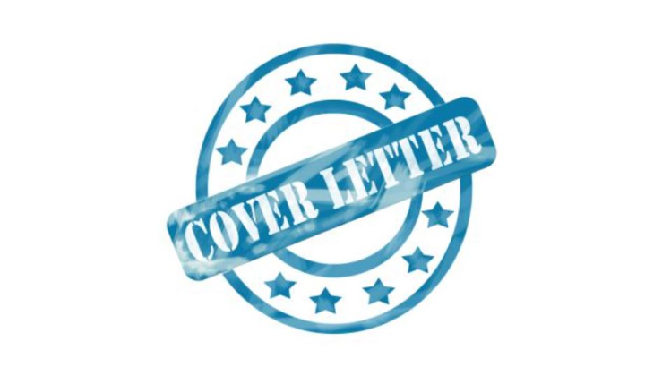

Motivation Letter
05 Feb 2021 by Kriss Valgers
Dear Employers,
I would like to express my interest in the upcoming position. I am a self-motivated and
progress-driven Restaurant&Bar Manager / Assistant Hotel Director
with an extensive background in this industry. With a long-standing record of initiative
and innovation, I have developed and executed strategies, which I believe, will bring value to
your company.
Throughout the course of my career, I have honed my customer service and problem solving
abilities. I am an astute
problem-solver capable of prioritizing and managing complex projects with proficiency.
In my previous role, I exercised problem solving, customer service, and guest satisfaction in
contribution of team efforts
and organizational improvements. I am open-minded and focused on new developments in
my field. I have proven to be
effective and motivational, with proficiency in communication and collaborative work. I enjoy
brainstorming and
coordinating efforts to achieve a common goal.
Please take a moment to review my enclosed resume and accompanying credentials. I would
appreciate the opportunity
to speak with you regarding my candidacy for the job role.
I am looking forward to your response and thank you for your consideration.
Thank you in advance for considering me.
Sincerely,
Kriss Valgers